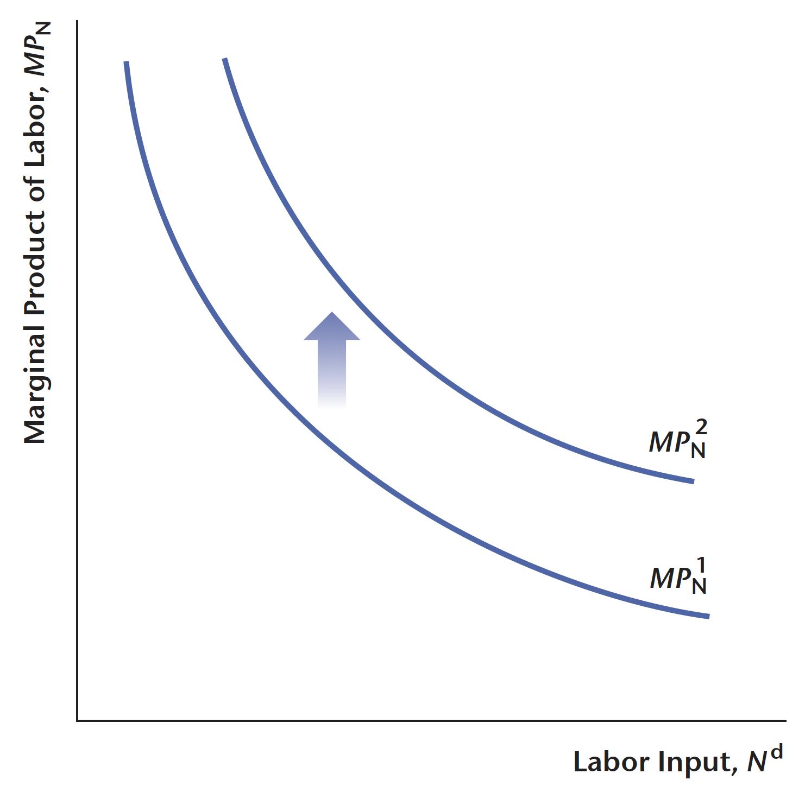
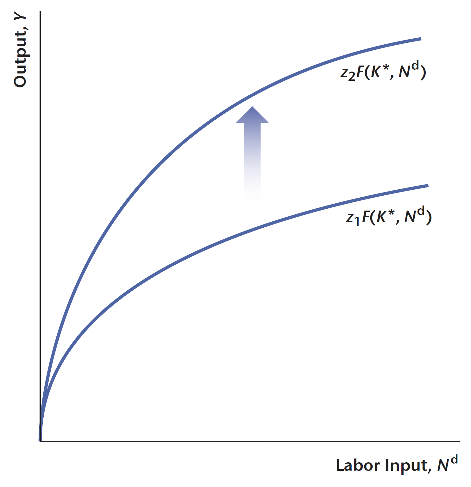
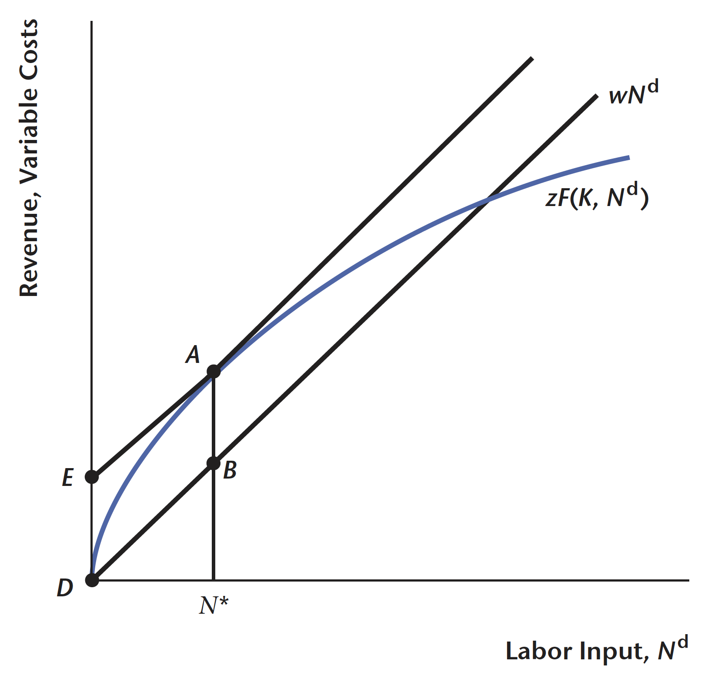

總體經濟學中廠商的最適選擇
透過分析廠商的最適選擇，我們可以了解廠商如何做決定，以及如何因應外在經濟環境的變化。
在總體經濟學研究領域中，一般而言我們都將經濟體系中的生產單位稱之為廠商(firm)，例如臺灣的護國神山台積電、蘋果公司，乃至於巷口的早餐店、小吃店，都稱之為廠商——因為它們都從事生產活動。
而廠商不論規模大小都面對了一些共同的決策，包含：
- 要生產什麼樣的產品
- 要如何生產產品
- 要雇用多少生產要素
- 勞工在不同職位的分配
- 要生產多少數量
- 如何定價
廠商猶如經濟體系中的個體一般，在作出上述決策時也會面臨一些限制，包含市場的客觀條件，以及廠商自身的生產技術(technology)。客觀條件例如市場上有多少競爭者，或是消費者對於該產品的需求狀況。在總體經濟分析中，為了方便分析，我們會假設廠商為同質性(homogenous)：生產相同產品、價格接受者，且不考慮定價問題。
因此，下述的分析將會著重在廠商雇用的人力、資本，以及廠商生產數量，不會特別討論市場結構、廠商類型等。
關於廠商的基本概念
在進一步研究廠商最適選擇前，我們首先要來釐清廠商的組成，以及廠商需要什麼樣的東西協助其生產，以便於我們進行分析時能夠快速了解這項變數在廠商眼中應該是上升或下降。
廠商的投入與產出
廠商在經濟體系中，從要素市場雇用生產要素以生產產品，並在產品市場將產品銷售出去。以巷口的小吃店為例，小吃店的老闆首先會先選定好開店的位置，在門口貼上「誠徵店員」的告示，這就是雇用土地與勞工的行為。接著，老闆會根據菜單從市場買菜或是從批發商進貨，並且購買廚具、碗盤，最後透過其高超的廚藝將美食端給客人，這就是廠商所需要的資本，以及最終所生產出來的產品。

廠商的生產技術
我們可以用數學方程式表達上述廠商與不同生產要素之間的關係： \[ Y = zF(x_{1}, x_{2}, \cdots, x_{n}) \] 我們稱之為生產函數(production fucntion)。其中 \(Y\) 代表廠商所生產的產品數量，\(x_{i}\) 代表 \(n\) 種生產要素，\(z\) 則是生產效率(production efficiency)，用以捕捉生產技術或是生產面的干擾。
為了簡化分析與作圖，我們假設廠商僅考慮兩種生產要素：資本(capital)與勞動(labor force)，分別記為 \(K\) 與 \(N^{d}\)。因此上式可改寫為 \[ Y = zF(K, N^{d}) \] 我們稱之為代表性廠商(representative firm)，隱含每個廠商都有相同的生產技術，但實際上不同廠商使用的生產技術可能不同，對應到的生產關係也不同。
勞動投入
勞動投入是指經濟體中的總工時，以符號 \(L\) 來表示，而 \(h\) 則代表工人的平均效率或人力資本。所謂人力資本，是指工人通過教育、培訓和經驗所獲得的知識和技能的總和，以提高勞動生產力。這些技能和知識將體現在工人的勞動力中，進而影響生產力。具有較高學歷和技能的工人，在生產過程中所扮演的角色可能與其他人不同，導致職業水準上的異質性，同時也解釋了為何不同學歷的勞工起薪存在差異的現象。
因此，勞動投入可以表示為 \[ N^{d} = hL \] 這表示國民生產（或產出）的總量取決於平均效率總工時的乘積。換句話說，人力資本的水平與勞動投入成正比，人力資本水平越高，生產力越高，國民生產也會相應增長。
資本
資本即是泛指所有的機器設備(equipment)、廠房(plant)等，也就是幫助廠商在生產過程中加工、製作產品的要素。
生產函數
上面我們提及我們可以用生產函數描述廠商與不同要素之間的關係，以下我們就要針對生產函數的一些特性與性質進行更進一步的解釋與探討。
不過，在探討之前，首先要先釐清兩個概念：勞動邊際產量(marginal product of labor, MPN)與資本邊際產量(marginal product of capital, MPK)。所謂邊際產量(marginal product)，即是在其他要素使用量固定不變下，某種生產要素使用量的變動所引起的總產量變動。
因此在假設生產函數為離散型的情況下， MPN 與 MPK 的定義為： \[ \begin{aligned} &\text{MPN} = \frac{zF(K, N+1) - zF(K, N)}{(N+1) - N} = \frac{\Delta Y}{\Delta N}\\ &\text{MPK} = \frac{zF(K+1, N) - zF(K, N)}{(K+1) - K} = \frac{\Delta Y}{\Delta K} \end{aligned} \]

如果生產函數為連續型，則 MPN 與 MPK 的計算方式為 \[ \begin{aligned} &\text{MPN} = \frac{\partial Y}{\partial N}\\ &\text{MPK} = \frac{\partial Y}{\partial K} \end{aligned} \] 或是可以寫成 \[ \text{MPN} = zF_{N}, \quad \text{MPK} = zF_{K} \]
以下標表示對該變數偏微分。
沒有投入就沒有產出
此處的投入包含資本與勞動，無論是哪一種投入，只要其中之一是 \(0\)，產出都會是 \(0\)，即 \[ 0 = zF(0, N^{d}) = zF(K, 0) \] 這個關係即是刻畫生產過程中，資本與勞動都是必備的要素，只要缺少其中之一，整個產出鏈就會因此瓦解。
投入越多產出越多
在其他條件不變的情況下，無論是資本或勞動的增加，都將導致總產量的增加。輸出隨著資本或勞動投入的增加而增加。勞動的邊際產量 (\(MPN\)) 和資本的邊際產量 (\(MPK\)) 是衡量這些增加的指標。一般而言 MPN 與 MPK 恆為正。
邊際報酬遞減法則
當增加某一要素的使用量時，在其他生產要素保持不變的情況下，該要素對產量的邊際貢獻逐漸減少。換句話說，當我們持續增加一種生產要素，額外的生產產出將逐漸減少。我們可以透過數學表示： \[ \begin{aligned} &\frac{\partial \text{MPN}}{\partial N} = zF_{NN} < 0\\ &\frac{\partial \text{MPK}}{\partial K} = zF_{KK} < 0\\ \end{aligned} \]
對於邊際報酬遞減法則的解釋是：假設廠商一開始只有一名員工，其需要獨自處理所有工作，因此他的生產產量會受到限制。如果增加一名員工，他們可以相互協作，分工合作，這樣整體的生產產量將會提升。然而，隨著雇用的員工數量不斷增加，受限於現有的廠房和機器設備，新聘用的員工可能因為爭奪有限的機器而導致生產效率下降，從而妨礙整體生產的進行。因此，通常情況下，勞動的邊際產量會在一開始隨著勞動數量的增加而增加。然而，當勞動數量達到一定程度後，邊際產量開始遞減，甚至可能變為負值。
生產要素互補
勞動的邊際產量隨著資本的增加而增加，代表在其他條件不變的情況下，當資本的數量增加時，每單位勞動所能貢獻的額外產出也隨之增加。假設給定相同的勞動數量和技術因子準，資本的數量 (\(K\)) 增加會增加勞動的邊際產量。同樣地，資本的邊際產量也會隨著勞動投入的增加而增加。
因此，上述關係可以表示為： \[ \begin{aligned} &\frac{\partial \text{MPN}}{\partial K} = zF_{NK} > 0\\ &\frac{\partial \text{MPK}}{\partial N} = zF_{KN} > 0\\ \end{aligned} \]

技術因子
隨著技術因子的提高，即更先進的技術應用於生產過程，可以在不增加資本和勞動的情況下生產更多的產品。
由下圖可以看到，當技術上升時，生產函數會向上移動，即整體產出將隨著技術的進步而增加。

固定規模報酬
假設生產函數為 \(Y_{1} = zF(K,N)\)。當將所有生產要素按照相同的比例進行擴大時：
固定規模報酬(constant return to scale)：則當所有要素都按相同比例進行擴大時，產出的變化百分比也將與之相同。
規模報酬遞增(increasing return to scale)：則當所有要素都按相同比例進行擴大時，產出的變化百分比將大於這個比例。
規模報酬遞減(decreasing return to scale)：則當所有要素都按相同比例進行擴大時，產出的變化百分比將小於這個比例。
廠商的決策目標
廠商在面對多個可能的選擇時，其決策目標是追求利潤極大化。利潤可以表示為總收益減去總成本，即 \[ \pi = \text{TR} - \text{TC} \]
其中：
- 總收益(\(TR\))：廠商販售商品所獲得的收入，每單位商品的價格乘上產出的數量，即 \[ \text{TR} = P \times Q \]
- 成本(\(TC\))：指經濟成本，也稱為機會成本。在面對多個可能的選擇時，做出某項選擇會使廠商放棄其他可能的選擇機會。在這些放棄的選擇機會中，成本最高的機會對應的成本就是決策者的機會成本。
短期與長期
短期與長期的差別在於，廠商在長期時，生產要素均可調整；但在短期內，⼀種要素或多種要素使⽤量則是固定的。
短期的總產量是指在資本固定下，隨著勞動數量變化，廠商所能⽣產的產量。以下的分析只討論廠商在短期的最適決策，亦即將資本數量固定，針對勞動數量的最適選擇進行討問，以及勞動數量對產量的影響。
廠商的最適化問題
假設廠商是價格接受者(price taker)，即它無法改變市場價格。令 \(z, k, w\) 為生產效率、資本、實質工資(real wage)，且三者皆為外生給定(exogenously given)。廠商的最適化問題就是如何選擇 \(n\) 個勞動，使得利潤最大化。寫成數學形式即為： \[ \max_{n} \pi = zF(k, n) - wn \]
根據一階條件(first order condition)，我們可以得到 \[ zF_{n}(k, n) − w = 0 \Longleftrightarrow \text{MPN} = w \]

現在有兩種可能的情況：
\(\text{MPN} > w\)：表示勞動的邊際產量大於勞動的工資，這意味著增加勞動投入將增加利潤，廠商應該增加勞動數量。
\(\text{MPN} < w\)：表示勞動的邊際產量小於勞動的工資，這意味著增加勞動投入將降低利潤，廠商應該減少勞動數量。
由此可知，勞動需求是一個動態的過程：廠商在邊際產量與實質工資之間進行調整。
接著我們考慮以貨幣單位表示的生產函數，並令 \(W\) 為名目工資(nominal wage)。則上述的最適化問題可以改寫為
\[ \max_{n} \Pi = P \times zF(k, n) - Wn \] 同樣根據一階條件，我們可得
\[ P \times zF_{n}(k, n) − W = 0 \Longleftrightarrow P \times MPN = W \Longleftrightarrow \text{MPN} = \frac{W}{P} = w \]
考慮一個例子。假設廠商的目標是在給定資本(\(k\))、生產力(\(A\))和工資(\(w\))的情況下，最大化利潤(\(\pi\))。令生產函數為 \(y = Ak^\alpha n^{1-\alpha}\)，因此利潤最大化的問題可以表示為： \[ \max_n \pi = Ak^\alpha n^{1-\alpha} - wn \]
根據一階條件，得到 \[ (1 - \alpha) Ak^\alpha n^{-\alpha} = w \]
經過整理後可以得到勞動需求函數： \[ n^{d}(w, A, k) = \left( \frac{(1 - \alpha)A}{w} \right)^{\frac{1}{\alpha}} k \]
勞動需求函數表示在給定工資、生產力和資本的情況下，廠商將選擇的最適勞動數量。我們根據這個勞動需求函數可以得到以下的資訊：
- 當資本增加時，最適勞動數量也會增加。
- 當生產力增加時，最適勞動數量也會增加。
- 當工資增加時，最適勞動數量則會減少。
因此綜合上述資訊，我們可以將勞動需求函數寫成隱函數(implicit function)的形式： \[ n^{d} = n^{d}(\underset{+}{A}, \underset{-}{w}, \underset{+}{k}, \cdots) \]
Footnotes
Reuse
Citation
@online{sung2023,
author = {Sung, Anthony},
title = {總體經濟學中廠商的最適選擇},
date = {2023-07-24},
url = {https://yueswater-blog.netlify.app/posts/2023-07-24-macro-firm-maximization-problem/},
langid = {en}
}